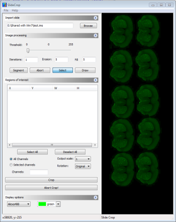
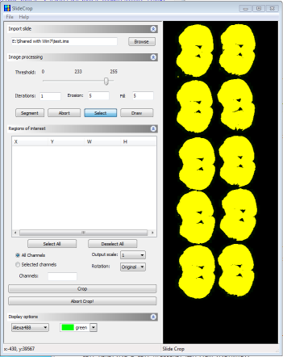
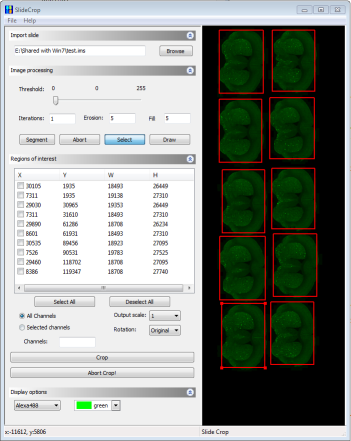
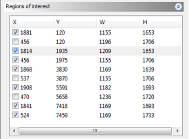
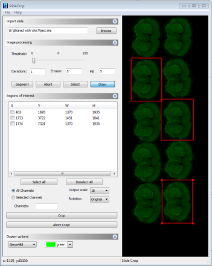

Load a slide scanner image in Imaris format using the Browse button

Automatically identify the tissue sections in the image by first applying an intensity threshold using the Threshold slider.

Push the Segment button to start the processing. If cropping fluroecence slide scanner images, the first channel is displayed and used for segmentation by default. Choose any other channel in the image using the dropdown menu in Display Options.

Check the boxes in the Regions of Interest table to mark which sections will be cropped from the input image.

In Image Processing click the Draw toggle button in order to enable manual segmentation. Simply draw a rectangle around the sections to be cropped from the input image.

Before cropping select which channels will be cropped to the output image; select the scale for the output image (down-scale by up to a factor of 16); and select a rotation direction for the image.